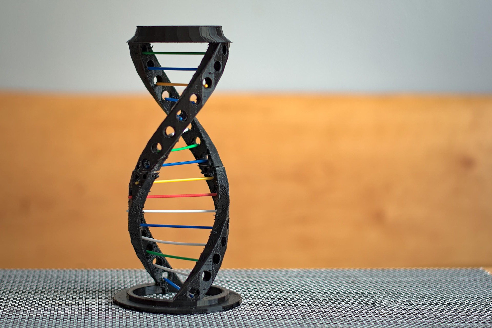

生物多様性は三つのレベルに分けるとされている
「様々な生態系が存在すること」＝生態系の多様性
「生物の種間に様々な差異が存在すること」＝種の多様性
「生物の種内に様々な差異が存在すること」＝遺伝子の多様性生態系を保全することは，そこに生息する多様な種を保全することになり，種を保全することは，遺伝子の多様性を守ることにつながります。また，多様な遺伝子の存在は，多様な種の生息につながり，そのことが豊かな生態系の保全をもたらしています。
生態系の多様性への配慮において、生物が多様な自然とのつながりを保てるようにすることが重要です。
そこで以下の3つが重要になります。
人の手によって、本来ある自然を破壊してしまうと、生物多様性の減少につながってしまいます。
このようなことを防ぐために、生物が生育できるような環境を作るように配慮すること大切です。
＜例＞
◦今ある自然は原則として現状のままで保全するようにする。工事などを行うと少なからず、自然環境に影響が与えられます。そして、生態系へ悪影響を及ぼす場合があります。そのため自然素材取り入れて、生物が行きやすい空間を作る配慮が求められます。
＜例＞
◦植樹をし、失われた自然環境を取り戻す。生物の生育場所が分断されたり、十分な生育空間が確保されない場合には、新たな緑地帯などを作りっていけば、生育環境が回復されていきます。
＜例＞
◦栽培をする場合は、最低限の量にとどめる。それぞれの種は、固有の遺伝子を持っており、種の絶滅はその種の遺伝子が絶滅することを意味します。これは、我々の生活に役立つ資源がなくなったり、生物進化の方向をゆがめてしまうことになります。そのため、多様な種を維持していくことが求められます。
種の多様性においては多様な生物が共存できるよう野生動物を保護したり、それらを生育できる環境を作っていくことが大切です。そのため以下の2つが重要になります。
希少種は生息地は、孤立しているなどの特徴があり、環境の変化に弱いです。
このことから希少種の生息域を保全し、ていくことが求められます。
＜例＞騒音、振動、汚水などは野生生物に様々な悪影響を与えています。
そのためこれらの環境影響要因をできる限り排除することが求められます。全ての生物は、親から子へ受け継がれる多種類の遺伝子を多様な組合せで持っており、その遺伝子の働きによって各個体の体の構造や機能などが発現されます。 多様な個性を持つ個体がいると、種全体として寒暖の変化や病気発生などの環境変化に対応できる可能性が高くなります。多様な個性を持つ個体数の減少は、その種が持っている遺伝子の種類が少なくなるとともに環境適応力を弱めることにつながります。
「遺伝子の多様性」への配慮において、その地域固有の遺伝子を維持するとともに、「遺伝子の個性」の減少を避けることが重要です。そこで、「遺伝子の多様性」への配慮について、以下のことが重要になります。
外来種が在来種と交雑することにより遺伝子の撹乱が起きます。そのため、外来種を持ち込まないようにすることが大切です。
＜例＞